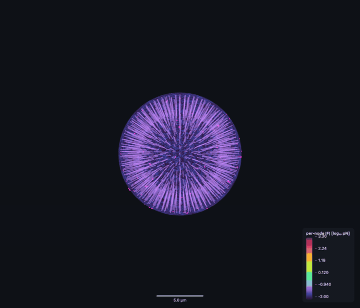
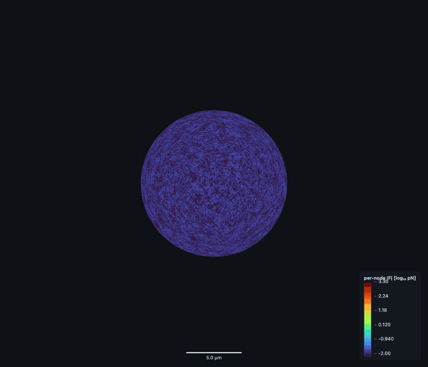
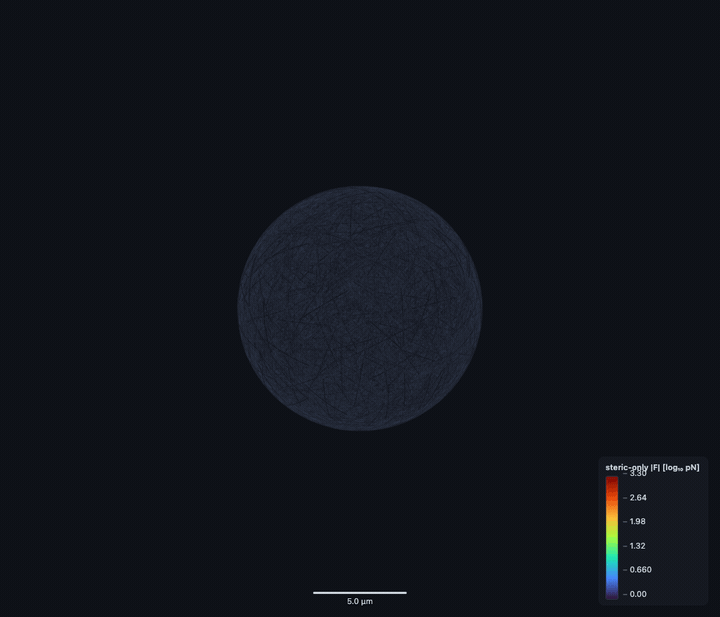
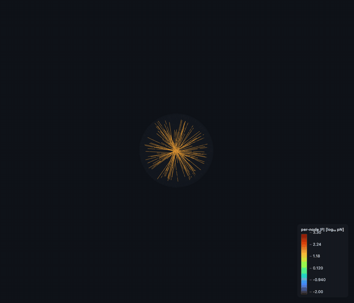
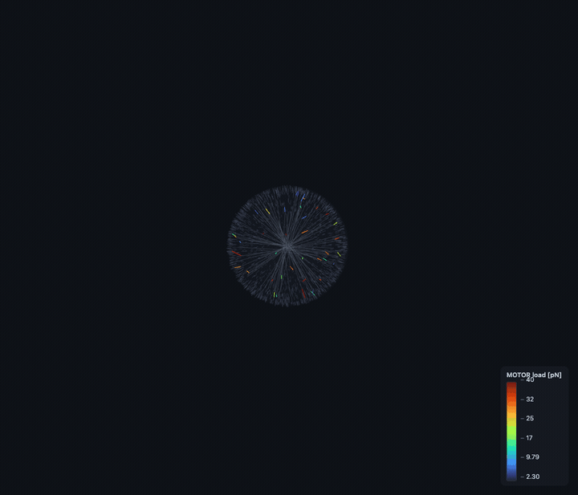
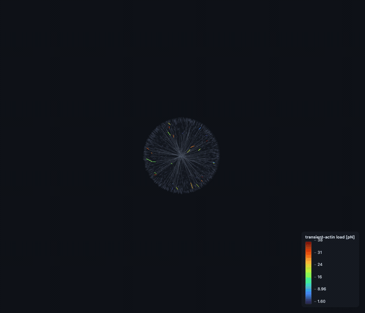

Each card = one staged slice, rendered per-component (isolation) + per-connector (load path) + cumulative composition. Data-driven from the dump manifest — new components/connectors appear automatically.
P0 · incumbent build_cell (N=70,686) CONNECTED
components: cortex(70,686), nmii(442), nucleus(1), membrane(1)
connectors: LINC:642
11 scenes · 7 render-verified



open interactive viewer →
P1 · SYNTHETIC full-graph (13 comp / real topology) SCHEMA-PROOF
components: membrane(1), cortex(2,000), nucleus(1), sf_arc(60), microtubule(120), intermediate_filament(150), lamellipodium(66), filopodium(8), ecm(300)
connectors: ERM:120, FA-clutch:60, LINC:40, LINC:30, LINC:30, MOTOR:40, MOTOR:30, plectin:30, spectraplakin:25, transient-actin:30, transient-actin:25, transient-actin:12, immersed-transfer:20, CONTACT:40
33 scenes · 13 render-verified



open interactive viewer →